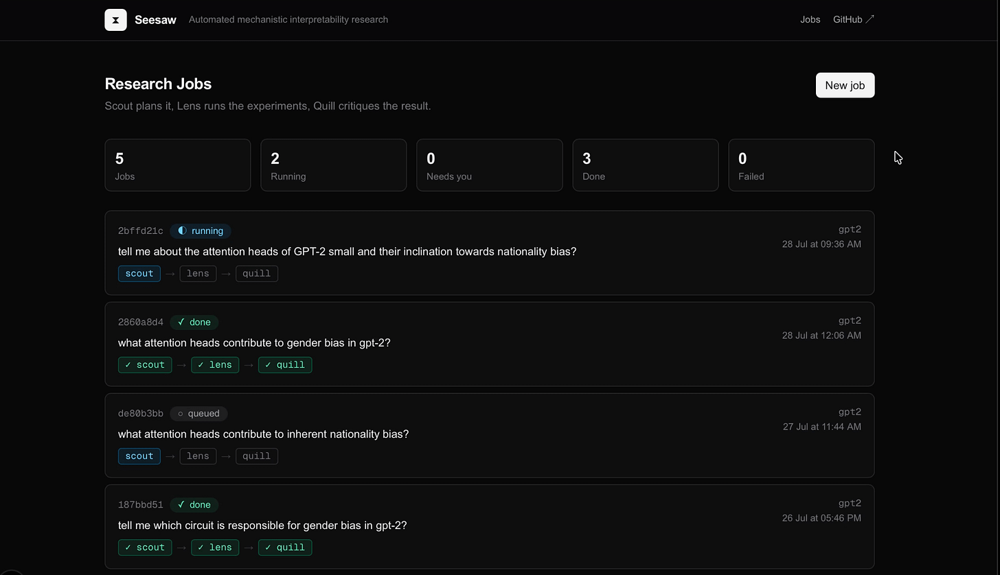

Part 7 of Building Seesaw: Agentic AI for AI Safety Research
Building Seesaw: Agentic AI to do AI Safety Research, Part 7
Using Seesaw in the real world
If you’re new to this series, welcome! In this series, I document the building of Seesaw, a multi-agent system for mechanistic interpretability research, built out of three agents: Scout, Lens, and Quill. Scout plans the research. Lens runs it. Quill reviews and critiques it. You can see the Github repository here.
At the end of Part 6, I said the next post would be about putting v0 into production. Seesaw is now fully deployed which you can view here as a read only link. This post is all about the deployment plan: how it was conceived, the steps and the current state of the application.

Deployment Plan
To start the deployment, I list down the requirements of each component of the deployment. For simplicity I am keeping this entire platform to be completely cloud based, although that might change based on my usage patterns overtime. The app itself consists of 3 components:
An interface: In order to interface with the agents in the Seesaw system I need an interface. Nothing too fancy, I decided that I wanted a simple dashboard where I can run a “job” which runs the entire seesaw “workflow” calling all agents in sequence and seeking approval from the human user at each step.
Scout and Quill: Since both these agents use only web search tools and Claude, and are unlikely to need any kind of scaffolding or environment at the moment, I combine both agents into a single deployment.
Lens: This agent is the one that requires the most compute (also requires both horizontal and vertical scaling as soon as I move up from GPT-2 to a billion-scale LLM). So this requires its own sandbox that spins up when it’s invoked. Lens needs the compute to run all the tools in their own sandbox.
One of the things that was important to me was to keep it as economical as possible at the moment. So the plan ultimately became: deploy the agents as two separate Modal apps: Scout and Quill combined on a single CPU deployment, and Lens with its own CPU/GPU sandbox. This way Modal charges only for the seconds that the agents are invoked (and Claude credits, of course, wherever applicable).
Part 5’s demo ran on Streamlit, and I said at the time that’s what let me “visualize web outputs and get a vision on how it will look like in production.” Ultimately, I ended up removing it entirely and building a Next.js dashboard as its own repo instead, talking to the job store and to Modal’s endpoints directly. Now the interface was itself deployed on the free version of Vercel, with a Postgres (Neon) database to store per-job result data. Below is a demo of what this dashboard looks like:
Challenges
Vercel functions have a problem: their duration cap measured in minutes (typical for web page requests). However, Lens experiments do not run in minutes: a stage can take up to an hour. So the dashboard can never be the thing running the agent. What it does instead: it inserts a queued row into Postgres, then calls Modal’s start endpoint, which spawns the stage with modal.Function.spawn() and returns in milliseconds while the actual work keeps running on Modal’s infrastructure.
No always-on worker or polling loop on my end or webhook infrastructure. The dashboard just reads whatever state is currently in Postgres. Modal does the actual waiting. Artifacts (plans, bundles, critiques, plots) don’t live in the container filesystem either: that gets discarded the moment a Modal function returns. They go to a Modal Volume and get served back over HTTP for the dashboard to proxy. Could they find a more permanent place in the future using R2/S3/even Google Drive? Maybe, it’s not my priority at the moment.
Setting it up, if you want to replicate it
I‘m not going to walk through every step here since the full instructions (database setup, Modal secrets, the two app deploys, dashboard config) are already written out in the deployment docs in the repo. The short version:
One Postgres database (Neon), one shared Modal secret, two Modal app deploys (CPU for Scout/Quill/Lens’s graph, GPU for Lens’s five tools), and a Vercel deploy pointed at both.
A
WRITE_KEYgates anything that spends money: creating, approving, cancelling, deleting a job. Reads stay open to anyone right here.Once it’s all wired up, creating a job in the dashboard should move it through
queued → running → awaiting_approvalend to end.
Where this leaves things
The system runs end to end now: a research question goes in through the dashboard, Scout and Lens and Quill run on Modal in sequence, a human approves the plan and the results at the two HITL checkpoints, and the critique comes back with plots served off the volume. Nothing about the architecture (Scout’s ReAct loop, Lens’s six-node graph, Quill’s four-node critique) changed to make this possible — only where each piece runs and how they talk to each other did.
What I want to be honest about: this post is infrastructure, not interpretability, and if you’ve been reading this series for the mechanistic interpretability parts specifically, there isn’t a research finding in this one. This step was very important for me since the plumbing has to exist before any of the interp work can happen without me babysitting a laptop. But it’s also why the next post goes back to the actual point of the project.
Next steps
With deployment done, the loop is finally: point Seesaw at a real question, walk away, come back to a plan or a result waiting for approval. But as you can see: the “research” capabilities are pretty basic, not all experiments succeed, the tooling is limited and as quill points out the ultimate research output/findings are weak, because the tool simply does not test against enough prompts/scenarios to be statistically significant at the moment. Next post, I’m using that to actually run the validation studies I’ve been setting up since Part 3, starting with IOI, moving through the other seven ground-truth papers and writing up what Scout, Lens, and Quill actually got right or wrong against published results, not just whether the pipeline executed and come up with a plan to improve the capabilities of the agents to produce high-quality “good” research output. Stay tuned!
Originally published on Mind & AI on Substack.